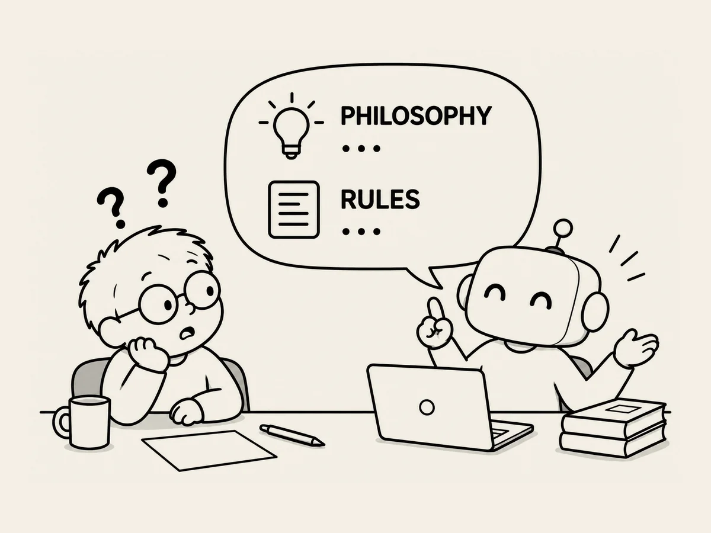

8.
Die KI spricht von Philosophie und Regeln.
Wenn ich der KI eine etwas kompliziertere Aufgabe gebe,
reagiert sie anders.
Das merkte ich,
als ich Geräusche erstellte und bearbeitete.
Statt alles auf einmal zu machen,
schlug sie vor,
Schritt für Schritt vorzugehen.
Ich machte einfach mit.
Sie sagte,
wir würden es in fünf oder sechs Schritten machen.
Okay.
Aber der allererste dieser fünf oder sechs Schritte
war fast immer derselbe.
„Philosophie und Regeln festlegen.“
Hä?
Philosophie?
Für ein einziges Geräusch?
Aber bei anderen komplizierten Aufgaben
war es genauso.
Auch als wir aus fertigen Figuren
mehrere Bilder im gleichen Stil erstellen wollten,
legte die KI zuerst Standards fest.
Die Philosophie festlegen.
Die Regeln festlegen.
Und sie dann Schritt für Schritt
in etwas umwandeln,
das tatsächlich umgesetzt werden kann.
Ich wurde neugierig und fragte:
„Warum ändert sich die Reihenfolge und die Art,
wie du arbeitest,
wenn die Aufgabe kompliziert wird?“
Die KI erklärte es mir.
Je komplizierter das Problem sei,
desto wichtiger sei es,
nicht sofort mit der Umsetzung zu beginnen.
Stattdessen gehe man zuerst eine Ebene höher
und definiere:
„Was ist das eigentlich?“
„Zuerst die Philosophie und die Grundsätze festlegen.
Die Regeln bestimmen.
Sie in Strukturen und Zahlen übersetzen.
Und am Ende wieder hinuntergehen
zur tatsächlichen Umsetzung.“
Hmm.
Auch die KI denkt also erst einmal nach,
wenn sie auf eine komplizierte Aufgabe trifft.
Und ganz oben bei diesem Nachdenken
standen
„Philosophie und Regeln.“
